16 Vad kan AI lära oss om proteiner?
I oktober 2024 tillkännagavs att halva Nobelpriset i kemi skulle gå till två forskare som hade löst ett problem som biokemister brottats med i mer än femtio år: hur man ur ett proteins byggstenar kan förutsäga dess form. Demis Hassabis och John Jumper arbetade inte på ett universitet utan på DeepMind, ett företag som ägs av Google och som tidigare blivit känt för att ha byggt datorprogram som slog världsmästare i brädspelet go. Deras verktyg var artificiell intelligens (AI). Den andra halvan av priset gick till David Baker, som med datorns hjälp lärt sig att konstruera helt nya proteiner.
I dag kan vem som helst skriva in en proteinsekvens på en webbsida och efter några minuter få se en tredimensionell modell av proteinet, i de flesta fall nästan lika noggrann som om den hade bestämts med röntgenkristallografi. Hur gick det till? Genombrottet kom inte från ingenstans. Det byggde på idéer som hade vuxit fram under flera decennier, och som till slut fogades ihop till ett enda program. I det här kapitlet följer vi hela den utvecklingen, från de första försöken att gissa hur en proteinkedja ser ut, genom trettio år av långsamma framsteg, till ett genombrott som överraskade nästan alla.
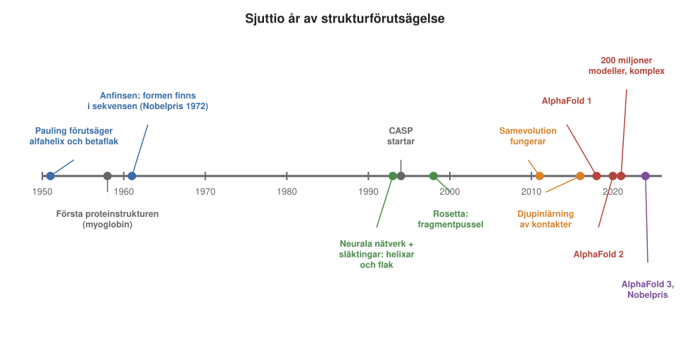
16.1 Från sekvens till struktur
För att förstå vad AlphaFold åstadkom måste man först veta vilket problem det löste, och varför problemet var så svårt.
Som vi såg i Kapitel 1 och Kapitel 3 är ett protein en lång kedja av aminosyror. Ordningen mellan aminosyrorna kallas proteinets sekvens, och den bestäms av en gen. När kedjan har tillverkats i ribosomen veckar den sig till en bestämd tredimensionell form, proteinets struktur. Vattenskygga (hydrofoba) aminosyror samlas i mitten, och vattenälskande och laddade hamnar på ytan (Avsnitt 14.2). Formen avgör vad proteinet kan göra.
Den första proteinstrukturen, myoglobin, bestämdes i slutet av 1950-talet (Kapitel 5). Sedan dess har forskare bestämt mer än 200 000 strukturer med röntgenkristallografi, kryo-EM och andra metoder (Kapitel 6), och samlat dem i en öppen databas, Protein Data Bank (PDB). Men varje struktur kostar mycket arbete, ofta flera år. Proteinsekvenser är däremot billiga: de kan läsas direkt ur DNA, och i dag känner vi till omkring 200 miljoner (Kapitel 11). Att kunna gå direkt från sekvens till struktur vore därför mycket värdefullt.
Fyra nivåer av struktur
Alla delar av strukturen är inte lika svåra att förutsäga. För att se var svårigheten ligger brukar man skilja mellan fyra nivåer:
- Primärstruktur är själva sekvensen, ordningen mellan aminosyrorna.
- Sekundärstruktur är de regelbundna mönster som kedjans ryggrad bildar på korta sträckor: spiraler, alfahelixar, och plana betaflak, där kedjan går fram och tillbaka och delarna ligger bredvid varandra. De hålls ihop av vätebindningar mellan ryggradens atomer (Avsnitt 1.10.3). Partier utan regelbundet mönster kallas slingor.
- Tertiärstruktur är hela kedjans tredimensionella form: hur helixar och flak packas mot varandra till en kompakt enhet.
- Kvartärstruktur är hur flera kedjor fogas ihop till ett komplex, som de fyra kedjorna i hemoglobin.
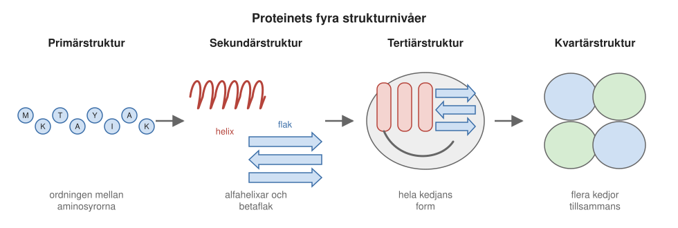
Den lokala formen, sekundärstrukturen, kan delvis räknas fram från enkla principer. Det visade sig redan i den första lyckade strukturförutsägelsen, som gjordes innan någon proteinstruktur alls var känd. Linus Pauling, som vi mötte i Kapitel 4, utgick från hur atomerna i ryggraden kan ligga och vilka vätebindningar som kan bildas mellan dem. Enligt historien fick han idén när han låg sjuk och vek en pappersremsa med ritade aminosyror. År 1951 beskrev han både alfahelixen och betaflaket, och när de första strukturerna bestämdes några år senare fanns de där. Det svåra är tertiärstrukturen: hur hela kedjan lägger sig.
Men även tertiärstrukturen följer vissa mönster, som gör problemet mindre hopplöst än det låter. Större proteiner består ofta av flera domäner, kompakta delar på ungefär 50 till 250 aminosyror som kan vecka sig var för sig. Under evolutionen har domänerna kombinerats på nya sätt, ungefär som byggklossar. Och antalet olika grundformer (eng. folds) är förvånansvärt litet: de hundratusentals kända strukturerna kan sorteras in i bara drygt tusen grundformer. Ett nytt protein har därför ofta en form som redan finns i databasen, även när man inte kan se släktskapen på sekvensen. Det är en av de genvägar vi återkommer till.
Formen finns i sekvensen, men hur hittar man den?
Att det alls är möjligt att förutsäga strukturen visade Christian Anfinsen på 1950- och 60-talen. Som vi såg i Avsnitt 14.1.1 veckar sig ett protein som vecklats upp tillbaka till samma form av sig självt, om förhållandena är de rätta. All information om formen måste alltså finnas i sekvensen. Anfinsen tolkade det som att den rätta formen är den där proteinet har lägst energi: som en kula som till sist hamnar på botten av en dal, oavsett var den släpptes. I cellen får många proteiner hjälp av chaperoner (Kapitel 13), men de hjälper bara kedjan att undvika att fastna på vägen. Själva formen bestäms fortfarande av sekvensen.
Men hur hittar proteinet den formen? Det finns oerhört många möjliga former. En kedja på hundra aminosyror skulle behöva längre tid än universums ålder för att pröva dem alla. Det är Levinthals paradox, som vi mötte i Avsnitt 14.1.1. Lösningen är att proteinet inte provar alla former. Man brukar likna energin vid ett landskap format som en tratt: nästan varje steg som gör kedjan lite mer lik den rätta formen sänker energin, så kedjan glider stegvis nedför tratten, längs många olika vägar, mot botten (Figur 14.3 i Kapitel 14).
Två egenskaper hos veckade proteiner från Kapitel 14 får betydelse för den som vill förutsäga strukturen. Ett veckat protein är inte stelt, utan vibrerar och böjer sig hela tiden och pendlar ibland mellan veckat och oveckat tillstånd. Den form vi ser i en struktur är en sorts ögonblicksbild. Och som vi såg i Avsnitt 14.2.1 är proteiner bara nätt och jämnt stabila. Tusentals svaga bindningar är inblandade, men skillnaden i energi mellan veckat och oveckat motsvarar bara några få vätebindningar.
För den som vill förutsäga strukturen blir uppgiften alltså: hitta den form som har lägst energi. Krafterna mellan atomerna är ganska väl kända. Två atomer kan inte överlappa, laddningar drar till sig eller stöter bort varandra, vätebindningar bildas, och vattenskygga delar vill gömma sig från vattnet, på samma sätt som oljedroppar i vatten flyter ihop till en större droppe (Avsnitt 14.2). Varför inte bara låta en stor dator simulera hur kedjan rör sig tills den hittar sin form?
Varför fysiken inte räcker
Det finns två skäl till att en sådan simulering inte fungerar. Det första är att det tar för lång tid. Atomerna vibrerar så snabbt att en simulering måste ta steg på ungefär en femtosekund, en miljondels miljarddels sekund. För att simulera en enda sekund krävs alltså omkring en miljon miljarder steg, och i varje steg ska krafterna mellan alla atomer räknas ut, inte bara i proteinet utan också i allt vatten runt omkring, som utgör den största delen av systemet. Många proteiner behöver millisekunder eller sekunder för att vecka sig. Även med dagens snabbaste datorer är simuleringarna för vanliga proteiner ungefär tusen gånger för långsamma. För några mycket små proteiner, som veckar sig på mikrosekunder, har man med specialbyggda superdatorer lyckats simulera hela veckningen. Det är alltså en fråga om datorkraft snarare än om att fysiken är fel.
Det andra skälet har att göra med att proteinet bara är nätt och jämnt stabilt. Skillnaden i energi mellan den rätta formen och en nästan rätt form är därför liten, mycket mindre än summan av alla krafter som ska räknas ut. Små fel i beskrivningen av krafterna, till exempel av hur vattnet beter sig, kan då få en felaktig form att se bättre ut än den rätta.
Den som vill ta en genväg, och leta direkt efter formen med lägst energi utan att simulera hela förloppet, står alltså inför två uppgifter. Man måste kunna leta effektivt bland alla tänkbara former, och man måste kunna känna igen den rätta när den dyker upp. För vanliga proteiner har vägen via fysiken inte fungerat, och den används inte heller av de program som till slut löste problemet. I stället har forskarna sedan 1970-talet tagit olika genvägar, och nästan alla bygger på samma insikt: att evolutionen redan har gjort mycket av arbetet.
16.2 CASP: en tävling där ingen vet svaret
Med så många olika genvägar behövs ett sätt att avgöra vilka som fungerar. Hur vet man om en metod för att förutsäga strukturer är bra? Det låter enkelt: man testar den på proteiner vars struktur man redan känner. Men erfarenheten visar att sådana tester nästan alltid blir för optimistiska. Den som utvecklar en metod vet svaret och justerar, ofta omedvetet, metoden tills den fungerar på just de testade proteinerna.
Därför startade forskarna 1994 tävlingen CASP (Critical Assessment of Protein Structure Prediction). Den går till så här. Forskare som just har bestämt en ny struktur med experiment, men ännu inte publicerat den, lämnar in proteinets sekvens till arrangörerna. Sekvenserna läggs ut, och deltagarna får några veckor på sig att skicka in sina förutsägelser. När strukturerna sedan publiceras jämförs förutsägelserna med facit av oberoende bedömare. Tävlingen hålls vartannat år, och omkring hundra proteiner ingår varje gång.
Eftersom ingen av deltagarna vet svaret i förväg går det knappt att fuska. Det har hänt att någon försökt ta sig in i en dator för att komma åt facit, eller till och med försökt bestämma strukturen själv med experiment under de få veckor som står till buds. Men i stort sett har upplägget hållit i trettio år.
CASP var ett av de första helt oberoende, dubbelblinda testerna av datorförutsägelser: förutsägelserna görs innan svaret är känt, och de bedöms av andra än de som har gjort dem, utan att bedömarna vet vems förutsägelse de bedömer. Idén har senare spridits till många andra fält, till exempel till förutsägelser av hur proteiner binder till varandra och av vad proteiner gör.
Eftersom samma typ av mått har använts sedan starten kan man också följa utvecklingen över trettio år. Ett av de viktigaste måtten anger hur stor del av proteinet som kan läggas ovanpå den experimentella strukturen så att de stämmer överens, på en skala från 0 till 100. Ungefär 90 motsvarar skillnaden mellan två experimentella bestämningar av samma protein.
Under lång tid såg bilden likadan ut. Proteiner som liknade något som redan fanns i databasen kunde förutsägas bra, eftersom man kunde använda den kända strukturen som mall. Men för helt nya proteiner, utan någon känd släkting, gick det dåligt, och framstegen mellan tävlingarna var små. Det var just den här tydliga måttstocken, med facit och siffror som kan jämföras över tid, som senare lockade företaget DeepMind att ge sig in på problemet.
16.3 Vad är maskininlärning?
Innan vi följer genvägarna behöver vi ett av verktygen. Flera av dem, och till slut AlphaFold, bygger på maskininlärning, den del av AI som handlar om att låta en dator lära sig av exempel i stället för att följa regler som en människa har skrivit.
Tänk dig att du ska skriva ett program som avgör om en bild föreställer en katt eller en hund. Med vanlig programmering måste du själv formulera reglerna: leta efter spetsiga öron, titta på nosen, mät ögonens form. Det blir snabbt hopplöst, särskilt om djuret är fotograferat bakifrån eller ligger hoprullat. Med maskininlärning gör man i stället så här:
- Man samlar in tusentals bilder där en människa redan har angett svaret, katt eller hund. Det kallas träningsdata.
- Programmet, som från början gissar på måfå, får se en bild och gissar.
- Programmet får veta hur fel det hade och justerar sina inre inställningar en aning, så att det skulle ha gissat lite bättre.
- Det upprepas miljontals gånger, med alla bilderna om och om igen.
Till slut har programmet lärt sig själv vilka drag som skiljer katter från hundar, utan att någon har talat om vilka de är.
Den vanligaste sortens program för maskininlärning kallas ett neuralt nätverk, efter en löst inspirerad likhet med hjärnans nervceller. Det består av många lager av enkla räknesteg, och de inre inställningarna, som kan vara många miljoner, är de siffror som justeras under träningen. Ett nätverk med många lager kallas djupt, och att träna sådana nätverk kallas djupinlärning (eng. deep learning).
Lagren delar upp arbetet mellan sig. När man undersöker vad de har lärt sig visar det sig ofta att de första lagren känner igen enkla saker som kanter och streck, och de senare lagren allt mer sammansatta mönster, som ögon och öron.
Den största faran med maskininlärning är att programmet lär sig utantill i stället för att förstå. Ett program som bara har memorerat träningsbilderna klarar dem perfekt men misslyckas med nya bilder. Därför testar man alltid på exempel som programmet inte har sett under träningen, och det är just det som CASP gör.
Neurala nätverk är ingen ny idé. Redan i början av 1990-talet användes små nätverk för att förutsäga delar av proteiners struktur, som vi snart ska se. Det som förändrade läget var de djupa nätverken, och genombrottet kom kring 2012 inom bildigenkänning. Ett nytt djupt nätverk, AlexNet, tränades med hjälp av grafikkort, samma sorts kretsar som används i datorspel, och det gjorde plötsligt mycket färre fel än alla tidigare program. På några år sjönk andelen felaktigt klassade bilder i en stor årlig tävling från ungefär var femte till ungefär var tjugonde. Som vi ska se fick det betydelse även för proteinerna.
16.4 Evolutionen som hjälpreda
Nästan alla genvägar bygger, som vi såg i Avsnitt 16.1.3, på att evolutionen redan har gjort mycket av arbetet. Det vilar på en enkel iakttagelse: proteiner som har ett gemensamt ursprung har nästan alltid liknande struktur, även när deras sekvenser har förändrats mycket. Myoglobin, som lagrar syre i musklerna, och de fyra kedjorna i hemoglobin, som bär syre i blodet, härstammar från samma ursprungliga gen. Sekvenserna skiljer sig åt, men formen är nästan densamma. Sådana släktingar kallas homologa proteiner. Ett protein från människa, mus, jäst eller en bakterie som har samma uppgift har oftast samma grundform. Formen förändras alltså mycket långsammare än sekvensen under evolutionen.
Det ger en möjlighet som naturen själv inte använder när proteinet veckar sig, men som en forskare kan använda: att titta på hela proteinfamiljen samtidigt.
Att ställa upp släktingarna
För att kunna titta på hela familjen måste man först samla ihop den och ställa upp den så att släktingarna går att jämföra. Man börjar med att söka efter proteinets släktingar i de stora sekvensdatabaserna, som UniProt. Sökprogrammen har blivit snabbare och känsligare under årens lopp. Under covid-pandemin tog det bara ett par dagar från det att virusets arvsmassa hade lästs tills man kunde jämföra alla dess proteiner med alla andra kända proteiner. Men programmen har ständigt fått kämpa för att hinna med, eftersom databaserna växer ännu fortare än datorerna blir snabbare.
De släktingar man hittar ställs upp under varandra, så att aminosyror som motsvarar varandra hamnar i samma kolumn. En sådan uppställning kallas en multipel sekvensuppställning (eng. multiple sequence alignment, ofta förkortat MSA). Den blir en sorts släktbok för proteinet (Figur 16.4).
Vad kan man då läsa ut ur släktboken? Det första är vilka positioner som är viktiga. Under evolutionen sker hela tiden små slumpmässiga förändringar, mutationer, i DNA. De flesta mutationer som förstör ett viktigt protein försvinner, eftersom bäraren inte överlever eller inte får avkomma. Om en position ser likadan ut i alla släktingar, från människa till bakterie, betyder det därför att just den aminosyran är viktig. Den är konserverad (bevarad), som vi såg i Kapitel 5 och Avsnitt 14.3. Aminosyror i proteinets inre, där de är tätt packade mot andra, är ofta mer konserverade än de på ytan.
Andra positioner varierar, men inom vissa gränser: kanske måste det alltid sitta en vattenskygg aminosyra där, men vilken spelar mindre roll. En sammanfattning av vad som är tillåtet i varje position kallas en profil.
Spiral eller flak?
Ett av de första försöken att förutsäga struktur gällde bara sekundärstrukturen: vilka delar av kedjan som bildar alfahelixar, vilka som bildar betaflak och vilka som är slingor. Det är tre möjligheter, så den som gissar på måfå får ungefär en tredjedel rätt.
De första metoderna, från 1970-talet, räknade ut hur ofta varje aminosyra förekom i helixar och flak i de få strukturer som då var kända. Vissa aminosyror trivs i helixar, andra i flak. Senare metoder tog också hänsyn till grannarna längs kedjan. Ändå nådde de bara omkring 60 procent rätt. Uppgiften är svårare än den låter: samma korta sekvens om tio aminosyror kan i ett protein bli en del av ett betaflak och i ett annat en alfahelix, beroende på omgivningen, alltså på delar av kedjan som ligger långt bort i sekvensen men nära i rummet.
Genombrottet kom från evolutionen. På 1990-talet visade Burkhard Rost och Chris Sander att man kom betydligt längre om man lät ett litet neuralt nätverk se profilen för hela proteinfamiljen i stället för en enda sekvens. Släktingarna avslöjar vad som är viktigt i varje position, och därmed vilken form den delen av kedjan troligen har.
Andelen rätt steg först till över 70 procent och med senare metoder till omkring 80 procent. I dag når de bästa programmen omkring 85 procent, nära den gräns som sätts av att inte ens experimentella strukturer alltid entydigt visar var en helix börjar och slutar. Samma idé, att låta familjen berätta mer än den enskilda sekvensen, kom att bära hela fältet.
Att låna formen av en släkting
Den säkraste genvägen till en tertiärstruktur är att hitta en släkting vars struktur redan är känd. Eftersom formen förändras så långsamt kan man då använda släktingens struktur som mall och bygga en modell av det nya proteinet på den. Det kallas homologimodellering. Arbetet sker i fyra steg:
- Sök efter släktingar med känd struktur i PDB.
- Ställ upp det nya proteinets sekvens mot mallens, så att aminosyror som motsvarar varandra hamnar mitt för varandra. Det är det viktigaste steget: ett fel här kan inte rättas senare.
- Kopiera mallens ryggrad för de delar som motsvarar varandra. Bygg sedan slingorna, där de två proteinerna skiljer sig, och lägg på sidogrupperna. Sidogrupperna kan bara inta ett fåtal föredragna lägen, så uppgiften blir att välja rätt läge för var och en så att de passar ihop.
- Kontrollera modellen.
Hur bra modellen blir beror främst på hur lika sekvenserna är. Om ungefär hälften av aminosyrorna är identiska blir modellen nästan lika bra som en experimentell struktur. Om mindre än en tredjedel är identiska blir uppställningen ofta fel, och modellen likaså. Program som MODELLER och webbtjänsten SWISS-MODEL gjorde homologimodellering till ett rutinverktyg redan på 1990-talet, och i CASP var det länge den enda metoden som pålitligt gav bra modeller.
Samma form utan synlig släktskap
Många proteiner har en grundform som redan finns i databasen, men utan att någon släktskap syns i sekvensen. Släktskapen kan vara så avlägsen att sekvenserna har glidit isär helt, eller så har två proteiner hittat samma form oberoende av varandra. Kring 1990 började forskare därför fråga: vilken av de kända grundformerna passar den här sekvensen bäst?
Metoden kallas trådning (eng. threading). Man trär sekvensen på ryggraden av varje känd struktur, en i taget, och bedömer hur väl den passar. Hamnar de vattenskygga aminosyrorna i proteinets inre och de laddade på ytan? Sitter aminosyror som brukar trivas i helixar där mallen har en helix? Poängen räknas fram med statistik över vilka aminosyror som brukar sitta var, och bredvid vilka, i de kända strukturerna.
Trådningen blev med tiden känsligare. Det visade sig fungera ännu bättre att jämföra hela profiler med varandra: släktboken för det nya proteinet mot släktböckerna för de proteiner vars struktur är känd. På 2000-talet blev det också vanligt att väga samman svaren från flera olika program, eftersom en grundform som många metoder pekar ut oftare är rätt.
Att pussla med fragment
För proteiner som inte liknar någon känd grundform återstod att bygga modellen från grunden. I mitten av 1990-talet fick David Baker i Seattle en idé som gjorde det möjligt. Korta bitar av en kedja, på tre till nio aminosyror, har nästan alltid en form som redan finns någonstans i databasen. Man kan därför plocka fragment ur kända strukturer, bitar vars sekvens liknar motsvarande bit av det nya proteinet, och låta ett program pussla ihop dem till ett helt protein. Programmet byter fragment ett i taget och behåller bytet om modellen blir bättre enligt en poängskala som bygger på statistik från kända strukturer (Figur 16.3).
Programmet, Rosetta, gav vid CASP kring sekelskiftet de första riktigt lyckade förutsägelserna av små proteiner utan mall. Det fungerade dock bara för proteiner kortare än ungefär hundra aminosyror, och ofta var bara en av tjugo modeller ungefär rätt, utan att man visste vilken. Rosetta växte så småningom till en hel verktygslåda, och det var med den som Bakers grupp senare började designa nya proteiner.
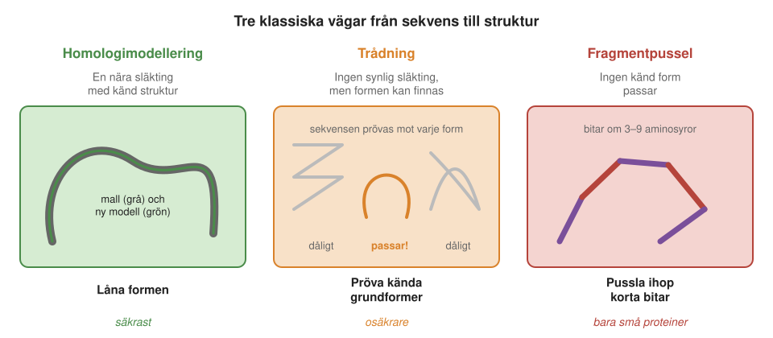
16.5 Aminosyror som ändras i par
Alla de klassiska metoderna hade samma svaghet. De visste mycket om den lokala formen, men nästan ingenting om vilka delar av kedjan som hamnar nära varandra, trots att de ligger långt ifrån varandra i sekvensen. Det var den informationen som saknades. Den visade sig också finnas i släktboken.
Titta på Figur 16.4. I två av kolumnerna varierar aminosyrorna, men inte oberoende av varandra. När den ena är blå är den andra gul, och tvärtom. De ändras i par. Det kallas samevolution eller koevolution.
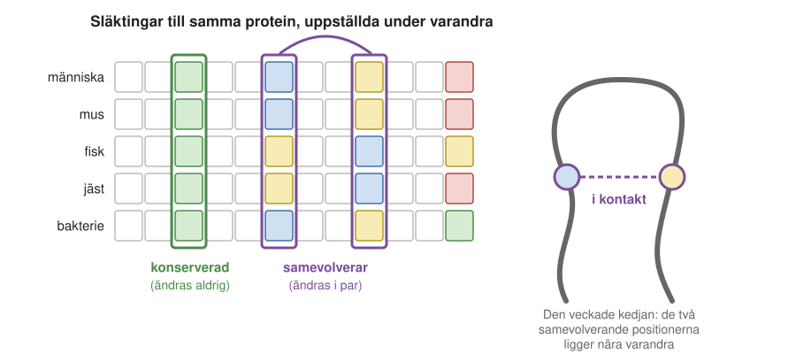
Förklaringen är att aminosyrorna ligger nära varandra i det veckade proteinet. Anta att en positivt laddad aminosyra sitter mot en negativt laddad, så att de drar till sig varandra (Figur 16.5). Om en mutation byter den positiva mot en negativ stöter de två bort varandra, och proteinet blir mindre stabilt. Organismen överlever kanske ändå, men den är lite sämre ställd. Om sedan en andra mutation byter den andra aminosyran mot en positiv passar de ihop igen. En sådan kompenserande mutation har större chans att bevaras av det naturliga urvalet. Samma resonemang gäller storlek: om en stor aminosyra byts mot en liten uppstår ett hål i proteinets inre, och det kan fyllas igen om grannen i stället blir större.
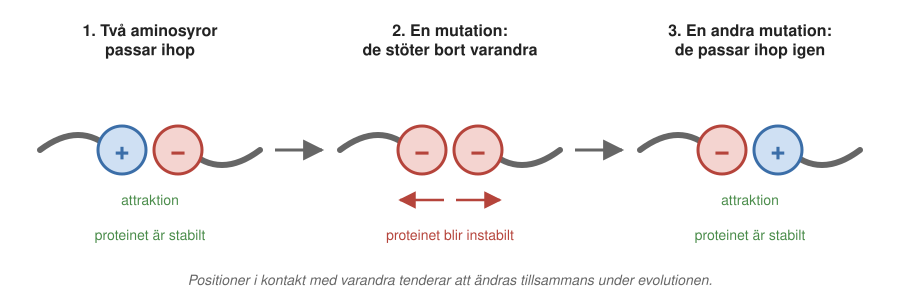
Om man vet vilka aminosyror som ligger nära varandra, och vet det för tillräckligt många par, kan man räkna fram strukturen. Det är samma princip som används i en av de experimentella metoderna, NMR, där man mäter vilka atomer som är nära varandra och sedan bygger en modell som stämmer med alla mätningarna.
Från idé till verktyg
Idén publicerades redan 1994, av bland andra Chris Sander och Alfonso Valencia, men fungerade inte i praktiken. Problemet är att proteinet inte består av isolerade par. Om A ligger mot B, och B ligger mot C, kan A och C se ut att samevolvera fast de inte är i kontakt. De indirekta sambanden drunknade de direkta (Figur 16.6). Dessutom ser alla organismer som är nära släkt med varandra lika ut i många positioner, bara för att de har ett gemensamt ursprung, och även det kan misstas för samevolution.
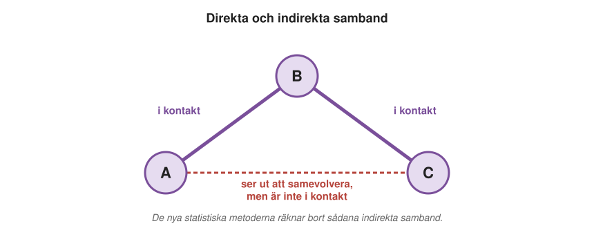
Kring 2009–2012 lärde man sig att räkna bort de indirekta sambanden. I stället för att jämföra kolumnerna två och två anpassade man en enda statistisk modell till hela släktboken på en gång, med metoder hämtade från fysiken, och modellen kunde då skilja direkta samband från indirekta. Det andra problemet, att nära släktingar liknar varandra, löste man med hjälp av fylogeni, alltså kunskap om hur sekvenserna är släkt med varandra. På så sätt räknas likheter som bara beror på ett gemensamt ursprung inte som samevolution.
Martin Weigt och kolleger visade 2009 att metoden hittade kontaktytan mellan två bakteriella proteiner som samarbetar, och 2011 visade Debora Marks, Chris Sander och kolleger att kontakterna räckte för att bygga hela strukturer av proteiner. En av de mest använda varianterna utvecklades av forskare vid KTH i Stockholm tillsammans med kolleger utomlands. Andelen korrekt förutsagda kontakter ökade betydligt, och nu räckte informationen för att bygga strukturer av proteiner som tidigare var omöjliga. Plötsligt fanns det hopp på CASP-mötena.
Varför fungerade det just då, när idén hade funnits sedan 1994? En viktig orsak var att databaserna hade vuxit. Metoden kräver många släktingar, i praktiken hundratals eller tusentals sekvenser, för att man ska kunna se vilka positioner som ändras tillsammans. Under 2000-talet hade antalet kända sekvenser mångdubblats, tack vare genomprojekten och sekvensering av hela miljöprover (Kapitel 11). De omkring 200 miljoner kända proteinsekvenserna kan sorteras in i ungefär 15 000–20 000 vanliga proteinfamiljer, så varje familj har i dag mycket många medlemmar. Antalet kända sekvenser fördubblas ungefär varje år. Antalet strukturer ökar däremot mycket långsammare, och många nya strukturer är varianter av proteiner som redan är kända, till exempel samma protein med olika läkemedel bundna.
Kontaktkartan
Det som kom sedan hänger på hur förutsägelserna av kontakter brukar ritas: som en kontaktkarta (Figur 16.7). Det är en kvadrat där både raderna och kolumnerna är aminosyrorna i kedjan, i ordning. Om aminosyra nummer 10 ligger nära aminosyra nummer 225, till exempel närmare än ungefär 8 ångström, sätter man en prick i rad 10, kolumn 225. Kartan är en sorts fingeravtryck av strukturen. En alfahelix syns som ett band längs diagonalen, eftersom varje aminosyra i en helix är nära den som kommer tre eller fyra steg senare. Två delar av ett betaflak som ligger bredvid varandra syns som streck vinkelräta mot eller parallella med diagonalen.
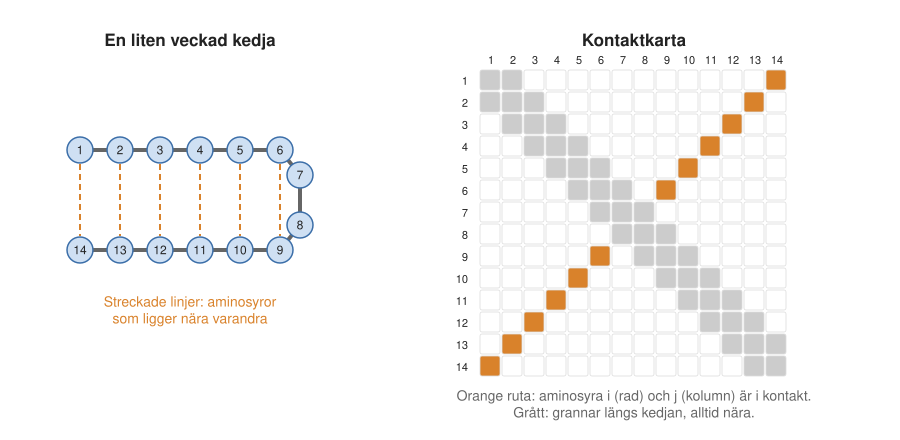
16.6 Djupinlärning kommer in
En kontaktkarta är i grunden en bild: en kvadrat med prickar. Och kontakterna är inte slumpmässigt utspridda. De bildar diagonala streck och band, och vissa mönster förekommer ofta medan andra aldrig gör det. Det är precis den sortens mönster som de djupa nätverken för bildigenkänning (Avsnitt 16.3) var bra på att hitta.
Flera forskargrupper såg möjligheten nästan samtidigt. Arne Elofssons grupp i Stockholm var 2014 en av de första som lät maskininlärning städa upp kontaktkartorna, med programmet PconsC2. Det var ännu inte ett neuralt nätverk utan en enklare sorts maskininlärning, men idén var densamma: programmet fick se de statistiska förutsägelserna och rättade prickar som inte passade in i mönstret (Figur 16.8). Några år senare lät Jinbo Xu i Chicago ett djupt nätverk från bildigenkänningen se hela kartan på en gång, och förutsägelserna blev mycket bättre. Andra grupper, bland dem den i Stockholm, gjorde snart liknande program.
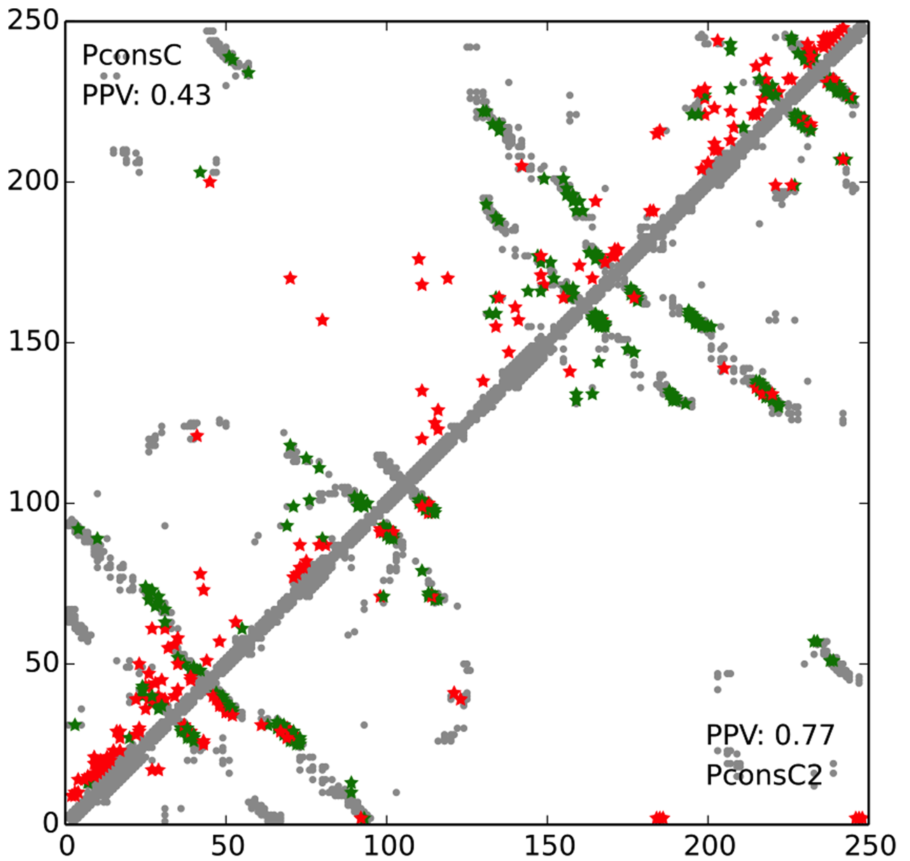
Effekten av djupinlärningen syns tydligt i CASP (Figur 16.9). Mellan 2010 och 2014 var omkring en femtedel till en fjärdedel av den bästa gruppens förutsagda kontakter rätt för svåra proteiner. 2016 var det nästan hälften och 2018 över 70 procent.
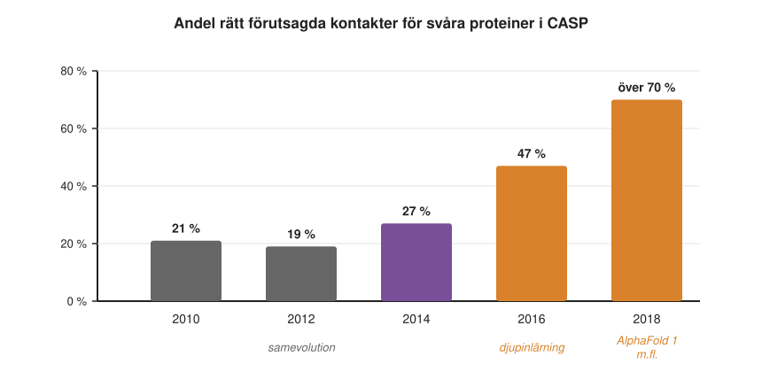
Med så många rätta kontakter gick det att bygga användbara modeller även av proteiner utan kända släktingar med känd struktur. David Bakers grupp kunde 2017 förutsäga strukturen för över 600 proteinfamiljer vars form ingen kände till, med hjälp av sekvenser från miljöprover, och gruppen i Stockholm gjorde samtidigt en liknande studie. Där båda grupperna hade gjort modeller för samma familj liknade de varandra, vilket stärkte tilltron till dem. Ett viktigt resultat var också att kombinationen av evolutionär information, samevolution och maskininlärning var bättre än varje del för sig.
AlphaFold 1
Samtidigt hade DeepMind, lockat av CASP:s tydliga måttstock (Avsnitt 16.2), gett sig in på problemet. Vid CASP 2018 deltog företaget för första gången, med programmet AlphaFold. Grundidén var densamma som hos de akademiska grupperna: släktbok, samevolution och ett djupt nätverk som tränats på kända strukturer. Men i stället för att bara förutsäga om två aminosyror är i kontakt förutsade AlphaFold hur långt det är mellan dem, och hur säker förutsägelsen är. Nätverket var också större och bättre tränat.
Resultatet var ett stort steg. Enligt Nobelkommitténs sammanfattning hade de bästa förutsägelserna för svåra proteiner tidigare legat kring 40 på CASP:s skala till 100. AlphaFold nådde nästan 60. Det var lovande, men inte tillräckligt: för att en modell ska vara lika bra som ett experiment behövs omkring 90. Och det var inte fundamentalt nytt. Inom ungefär ett år hade Bakers grupp och andra byggt liknande program, som trRosetta.
16.7 AlphaFold 2: genombrottet
Det verkliga genombrottet kom vid nästa tävling. CASP 2020 hölls mitt under covid-pandemin. Mötet, som brukar samla deltagarna på en badort i december, hölls i stället via internet, och deltagarna fick följa presentationerna hemifrån. Där presenterade DeepMind AlphaFold 2.
Det som chockade var inte bara att förutsägelserna var bättre, utan hur mycket bättre. Tidigare hade kurvan alltid sluttat: lätta proteiner gick bra, svåra dåligt. För AlphaFold 2 var kurvan nästan platt (Figur 16.10). Mittvärdet för alla proteiner i tävlingen låg kring 92, alltså i nivå med experimenten, och även de svåraste proteinerna låg nära 90. Alla andra grupper låg ungefär där AlphaFold 1 hade legat två år tidigare. Arrangörerna konstaterade att problemet med att förutsäga ett enskilt proteins struktur i stort sett var löst.
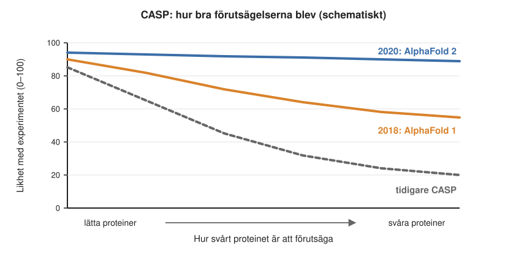
Detaljerna var också imponerande. Inte bara kedjans väg utan även sidogrupperna satt rätt. I ett av exemplen fanns en zinkjon i proteinet. AlphaFold 2 visste ingenting om zink och hade ingen zinkjon med i sin modell, men aminosyrorna runt det tomma stället var placerade precis som de ska vara för att hålla fast en zinkjon. Programmet hade lärt sig hur sådana platser ser ut.
Hur AlphaFold 2 fungerar
AlphaFold 2 var inte bara en förbättring av AlphaFold 1. De tidigare metoderna bestod av flera separata steg: först räknades samevolutionen ut, sedan förutsade ett nätverk kontakter, och sist fick ett annat program bygga en struktur. AlphaFold 2 är i stället ett enda stort neuralt nätverk som går hela vägen från släktbok till färdig tredimensionell struktur (Figur 16.11). Det tränades på strukturerna i PDB, med släktböckerna för varje protein som indata och den kända strukturen som facit. Man kan säga att programmet tog med sig alla de tidigare idéerna, släktboken, samevolutionen, kontakterna och avstånden, och gjorde var och en till en del av nätverket som kunde tränas.
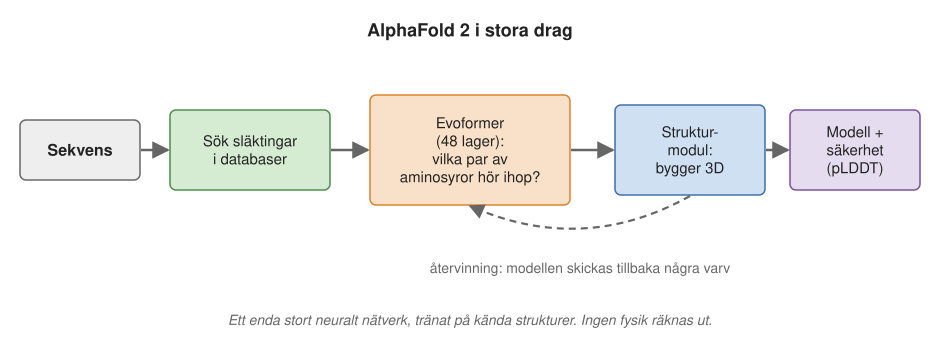
En av de viktigaste byggstenarna kallas uppmärksamhet (eng. attention). Det är ett sätt för nätverket att själv lära sig vilka delar av indata som hänger ihop med vilka, även när de ligger långt ifrån varandra. Idén kommer från de språkmodeller som i dag ligger bakom chattprogram som ChatGPT. En språkmodell tränas på att gissa nästa ord i en mening. I meningen “jag bor i ett …” är det ordet “bor” som gör att “hus” är en bättre gissning än “kyrka”, och nätverket måste lära sig att just det ordet är viktigt för gissningen. I AlphaFold används samma idé på släktboken: vilka organismer ska man jämföra med varandra, och vilka positioner i kedjan hänger ihop?
En annan byggsten var ny: ett slags geometriskt sunt förnuft, inbyggt i nätverket. Om aminosyra A ligger nära B, och B ligger nära C, då kan A och C inte ligga hur långt ifrån varandra som helst, och nätverket kontrollerar hela tiden att avstånden går ihop.
När modellen till sist byggs upp börjar alla aminosyror i samma punkt och flyttar sig sedan ut till sina platser. Det har ingenting med hur ett verkligt protein veckar sig att göra. AlphaFold räknar inte med några fysikaliska krafter alls.
Det är en viktig poäng. AlphaFold 2 förutsäger strukturen genom att känna igen mönster i evolutionen, som det har lärt sig från tidigare kända strukturer. Det säger därför ingenting om veckningsvägen, det vill säga hur kedjan tar sig till sin form.
Sommaren 2021 publicerade även Bakers grupp ett liknande program, RoseTTAFold, som var nästan lika bra. Det visade att idéerna gick att upprepa utanför DeepMind, och att genombrottet inte hängde på någon hemlig ingrediens.
Trettio år av CASP i korthet
Med facit i hand kan man sammanfatta utvecklingen i CASP så här (Tabell 16.1).
| År | Vad som fungerade |
|---|---|
| 1994–2004 | Homologimodellering när det fanns en nära släkting med känd struktur. Trådningen blev stegvis bättre. Fragmentpussel gav de första lyckade modellerna av små proteiner utan mall. |
| 2006–2016 | Små steg. Program som vägde samman flera metoders svar, och program som bedömde hur bra en modell var. Från 2014 gav samevolution de första modellerna av större proteiner utan mall. |
| 2018 | Djupinlärning av avstånd mellan aminosyror. AlphaFold 1 var bäst. |
| 2020 | AlphaFold 2: nästan experimentell noggrannhet för de flesta enskilda proteiner. |
| 2022–2024 | Nästan alla grupper bygger på AlphaFold. 2024 hade de bästa grupperna rätt grundform för alla enskilda domäner. Kvar finns stora komplex, RNA, små molekyler och proteiner som växlar form. |
16.8 Nobelpriset i kemi 2024
Nobelpriset i kemi 2024 delades i två lika delar. Den ena gick till Demis Hassabis och John Jumper vid Google DeepMind “för proteinstrukturprediktion”, den andra till David Baker vid University of Washington i Seattle “för datorbaserad proteindesign” (Figur 16.12). Hassabis ledde DeepMind och Jumper ledde arbetet med AlphaFold. Baker hade varit en av de ledande inom strukturförutsägelse i decennier, med fragmentpusslet, samevolutionen och djupinlärningen, men priset gavs framför allt för att han lärt sig att använda metoderna baklänges, för att skapa helt nya proteiner.
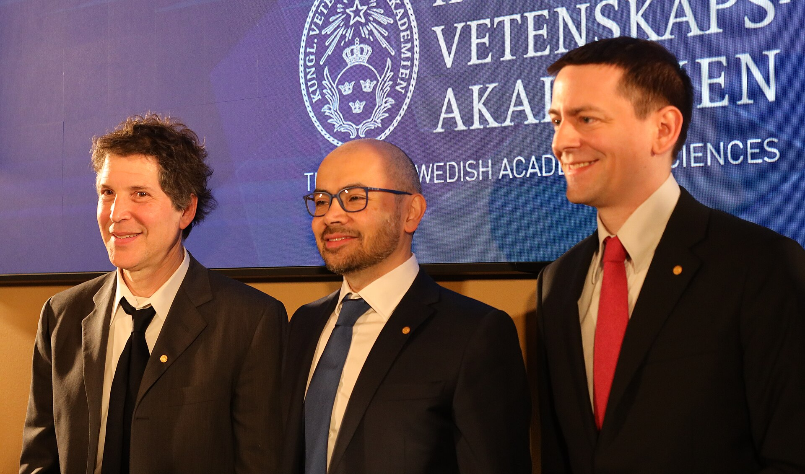
När priset presenterades var Peter Brzezinski, vars forskning om molekylära maskiner vi mötte i Kapitel 9 och Kapitel 10, sekreterare i Nobelkommittén för kemi.
Att designa nya proteiner
Att förutsäga en struktur betyder att gå från sekvens till form. Design är det omvända: man börjar med en form, eller en uppgift, och söker en sekvens som veckar sig till den. 2003 presenterade Bakers grupp Top7, ett protein med en form som inte finns i naturen och som visade sig ha nästan exakt den struktur man hade ritat. Sedan dess har gruppen designat proteiner som binder till virus, som bygger upp små partiklar för vacciner och som sätter fart på kemiska reaktioner.
Efter AlphaFold 2 har även designen tagit in djupinlärning. Ett vanligt arbetssätt har fyra steg. Ett program skapar en ny form, till exempel en som passar mot en viss yta på ett virusprotein, på liknande sätt som AI-program skapar bilder. Ett annat program föreslår en sekvens till formen. AlphaFold får sedan kontrollera förslaget: veckar sig sekvensen verkligen till den form man ville ha? Och till sist måste proteinet tillverkas och testas i laboratoriet, eftersom datorns kontroll inte är något experiment. Som vi såg i Kapitel 5 är det fortfarande svårt att designa riktigt bra enzymer, men proteiner som binder till andra molekyler kan i dag ofta designas med god träffsäkerhet.
16.9 Hur vet man om modellen är rätt?
En av AlphaFolds viktigaste egenskaper är att programmet vet när det inte vet. För varje aminosyra anger det ett mått på hur säker förutsägelsen är, kallat pLDDT, på en skala från 0 till 100. Det har tränats in på samma sätt som allt annat: under träningen fick nätverket inte bara gissa strukturen utan också gissa hur fel det hade. Måttet visade sig vara mycket pålitligt. Där AlphaFold säger att det är säkert stämmer det nästan alltid (Figur 16.13).
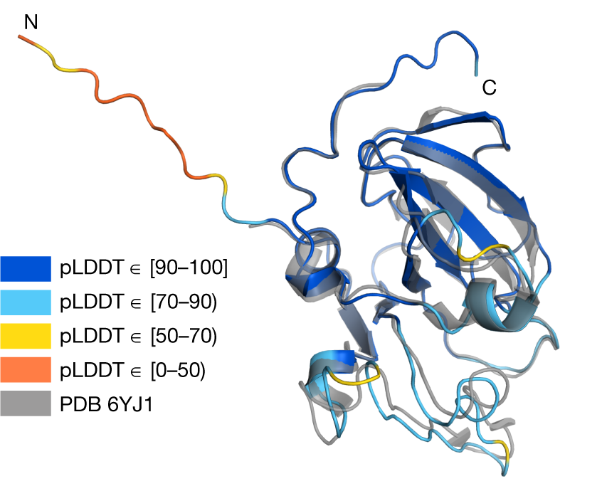
Modellerna brukar färgas efter säkerheten, från mörkblått (mycket säkert) till orange (mycket osäkert), som i Figur 16.14. Det gör det möjligt att använda de säkra delarna och bortse från resten.
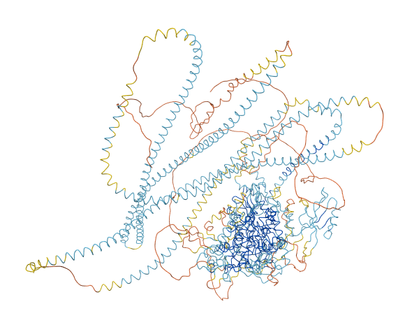
pLDDT säger dock bara något om den lokala formen kring varje aminosyra. Det säger inget om hur två domäner ligger i förhållande till varandra. Därför ger AlphaFold också ett andra mått, PAE (eng. predicted aligned error), som för varje par av aminosyror anger hur säker programmet är på deras inbördes läge. Två domäner kan båda vara mörkblå, alltså var för sig säkra, medan PAE visar att programmet inte vet hur de ligger mot varandra. Det är vad som har hänt med helixarna i Figur 16.14, och det är principen bakom Figur 16.15.
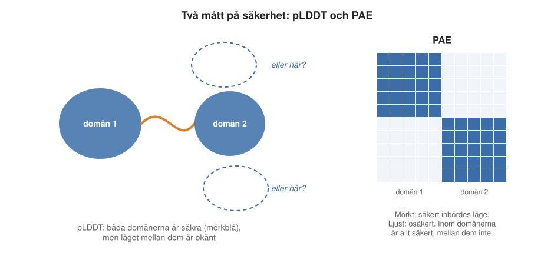
Det visade sig också att de osäkra delarna ofta inte är fel i vanlig mening. Många proteiner har delar som saknar fast struktur, oordnade regioner (Kapitel 3), som bara får en bestämd form när de binder till något annat, eller inte ens då. AlphaFold ritar dem som långa, slingrande band med låg säkerhet, och programmet har därför blivit ett av de bästa verktygen för att hitta oordnade delar i proteiner. Men låg säkerhet kan också bero på att det finns för få släktingar, eller på att proteinet kan inta flera former. Och omvänt kan en del som bara veckar sig när den binder till något ritas med hög säkerhet, i den bundna formen.
Det viktigaste att komma ihåg är att säkerhet inte är detsamma som riktighet. Måtten är programmets egen uppskattning, inlärd från samma data som allt annat. En modell är en välgrundad hypotes med en uppskattad pålitlighet, inte ett experiment.
16.10 Öppen kod och 200 miljoner strukturer
En förutsägelse gör bara nytta om forskarna kan använda den. Det kanske mest berömvärda med DeepMind var att de släppte koden fritt sommaren 2021, samtidigt som den vetenskapliga artikeln publicerades. Google hade kunnat försöka tjäna pengar på programmet, men i stället kunde alla forskare ladda ned det, köra det på egna datorer och bygga vidare på det. Inom ett halvår hade det kommit en lång rad nya studier som byggde vidare på programmet. De inställningar som nätverket hade lärt sig under träningen fick till en början bara användas för forskning, men villkoren blev senare friare även för företag.
Tillsammans med det europeiska bioinformatikinstitutet EMBL-EBI byggde DeepMind också en öppen databas med förutsagda strukturer. Först innehöll den alla mänskliga proteiner och proteinerna från ett tjugotal viktiga modellorganismer. Ett år senare hade den byggts ut till över 200 miljoner strukturer, i stort sett alla kända proteiner utom virusens. Virusens proteiner har andra forskare förutsagt senare. Den som är nyfiken på ett visst protein behöver alltså ofta inte köra något program alls, utan kan slå upp modellen direkt.
För den som vill göra egna förutsägelser byggde några forskare, bland andra Martin Steinegger i Seoul och Sergey Ovchinnikov, ColabFold. Där sker sökningen efter släktingar på en snabb server, och själva förutsägelsen körs gratis på Googles datorer via webbläsaren. Det tar en kvart till en halvtimme för ett normalstort protein, och man behöver inga datorkunskaper.
För förutsägelser i stor skala behövs däremot större datorer. I Sverige har superdatorn Berzelius i Linköping, som invigdes 2021 och betalades av Knut och Alice Wallenbergs stiftelse, varit ett viktigt verktyg för att köra AlphaFold på det sättet.
Modellerna används nu överallt: för att tolka experiment med röntgenkristallografi och kryo-EM (Kapitel 6), för att se var en sjukdomsmutation sitter i proteinet, som utgångspunkt för att utveckla läkemedel och för att få en överblick över vilka former proteiner kan ha.
16.11 Proteiner som arbetar tillsammans
Proteiner arbetar sällan ensamma. Som vi har sett i flera kapitel bildar de stora maskiner av många kedjor: ribosomen, ATP-syntaset och proteasomen, som bryter ned uttjänta proteiner. Redan efter CASP 2018 var det tydligt att de flesta enskilda proteiner snart skulle gå att förutsäga. Nästa stora fråga var hur proteiner sitter ihop med varandra. Den rymmer egentligen två frågor: vilka proteiner binder till varandra, och hur gör de det?
Ytan mellan två proteiner
För att förutsäga hur två proteiner binder till varandra hjälper det att veta hur ytan mellan dem brukar se ut. Ytan där två proteiner möts liknar på många sätt insidan av ett protein. Den är mer vattenskygg än resten av proteinets utsida, och aminosyrorna är tätt packade mot varandra. Bindningen är inte jämnt fördelad över ytan. Några få aminosyror i mitten, ofta stora sådana, står för det mesta av den. Byter man ut en av dem kan bindningen nästan försvinna, medan förändringar i kanten knappt märks. Ytor mellan proteiner är därför mer konserverade än resten av proteinets utsida, men mindre än dess inre.
Resten av ytan är inte heller betydelselös. Som vi såg i Avsnitt 14.5 och Avsnitt 14.7 avgör dess samlade laddning hur klibbigt proteinet är i den trånga cellen, och därmed vilka kortlivade möten som kan leda till bindning.
Pussel med färdiga bitar
De första försöken att förutsäga hur proteiner binder byggde på att man redan kände strukturerna för de enskilda proteinerna. De gamla metoderna, så kallad dockning, tog strukturerna för två proteiner och försökte passa ihop dem som pusselbitar. År 1992 visade en israelisk forskargrupp hur en dator snabbt kan pröva alla möjliga lägen, alla vridningar och förflyttningar av den ena biten i förhållande till den andra, och ge poäng för hur väl ytorna passar. Sedan 2001 har metoderna testats i en egen dubbelblind tävling, CAPRI, som fungerar som CASP.
Dockning fungerade dåligt, av två skäl. Proteiner ändrar ofta form lite när de binder till varandra, så de färdiga bitarna passar inte riktigt. Och programmen tog fram tusentals tänkbara lägen, men hade svårt att avgöra vilket som var det rätta. Ungefär en av tio eller en av fem förutsägelser blev godtagbar. Det gick bra i stort sett bara när det redan fanns en känd struktur av ett liknande komplex att utgå från.
Samevolution mellan två proteiner
Samevolution fungerar även mellan proteiner. Om två proteiner binder till varandra måste ytorna passa ihop, och en förändring på den ena ytan kan kompenseras av en förändring på den andra. Men för att se det måste man veta vilka släktingar som hör ihop. Ett protein från en människa binder knappast till ett protein från en mus. Därför paras släktingarna ihop organism för organism: människans protein A med människans protein B, musens A med musens B, och så vidare (Figur 16.16). Det är enklast hos bakterier, där gener för proteiner som arbetar tillsammans ofta sitter bredvid varandra i arvsmassan. Det är svårare om en organism har flera kopior av samma gen, eftersom man då inte vet vilken kopia som binder till vilken, men det går för de flesta.
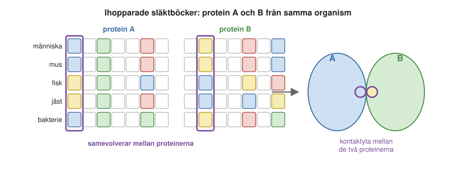
Redan 2014 använde Bakers grupp och Debora Marks grupp sådana ihopparade släktböcker för att förutsäga ytorna mellan proteiner i bakteriella komplex. Efter CASP 2018 prövade flera grupper, bland dem den i Stockholm, att låta de nya nätverken förutsäga hur två proteiner veckar sig och binder till varandra samtidigt. Det fungerade ungefär lika bra som dockning, men ofta i andra fall. Det var lovande, men långt ifrån ett genombrott.
AlphaFold för komplex
När koden till AlphaFold 2 släpptes i juli 2021 upptäckte forskare inom några dagar att man kunde lura programmet. Genom att sätta ihop två proteinkedjor med en lång, meningslös länk, eller genom att numrera aminosyrorna så att det blev ett stort hopp mellan kedjorna, kunde AlphaFold förutsäga strukturen för två proteiner tillsammans som om de vore ett.
Arne Elofssons grupp gjorde, med programmet FoldDock, en av de första stora utvärderingarna av tricket, i kombination med ihopparade släktböcker. Med AlphaFold 2 rakt av blev drygt 40 procent av förutsägelserna för par av proteiner godtagbara, och med bättre släktböcker omkring 60 procent. Många av modellerna var i stort sett perfekta. DeepMind släppte strax därefter en egen version tränad på komplex, AlphaFold-Multimer, som fungerade något bättre.
Det anmärkningsvärda är att AlphaFold 2 bara hade tränats på enskilda proteinkedjor. Det hade aldrig sett två proteiner binda till varandra. Ändå kunde det förutsäga hur de sitter ihop. Det tyder på att programmet inte bara har lärt sig strukturer utantill, utan har lärt sig något allmänt om hur proteiner packas, och att ytan mellan två proteiner följer samma regler som insidan av ett protein.
Precis som för enskilda proteiner behövs ett mått på hur säker förutsägelsen är, men nu för själva kontaktytan. Varje kedja kan vara rätt för sig, medan deras inbördes läge är fel. Stockholmsgruppen tog fram måttet pDockQ och DeepMind ett liknande mått, ipTM. Med dem kan man i de flesta fall avgöra om en modell för ett proteinpar är rätt eller fel. Det visade sig att måtten också säger något om ifall proteinerna alls binder till varandra: för par som inte gör det blir modellerna nästan alltid osäkra.
Alla mot alla
Därmed gick det att ställa den första frågan, vilka proteiner som binder till varandra, i stor skala. En grupp i Texas, tillsammans med Bakers grupp, prövade 2021 alla par av proteiner i jäst, över åtta miljoner, och fann omkring 1 500 par som troligen binder till varandra, många av dem tidigare okända.
För människan vet man genom experiment att tusentals par av proteiner binder till varandra, men för de flesta vet man inte hur. Arne Elofssons grupp gjorde, tillsammans med kolleger vid det europeiska bioinformatikinstitutet, modeller för omkring 65 000 sådana par. För drygt 3 000 blev modellerna så säkra att man kan lita på dem. Många av dem gällde par vars struktur ingen tidigare hade känt till.
Modellerna kan avslöja mer än enskilda par. Ett protein som heter GDI1 binder till ett stort antal så kallade Rab-proteiner, som styr transporten av vesikler i cellen (Kapitel 12). Modellerna visade att alla Rab-proteinerna binder till samma ställe på GDI1. De kan alltså inte binda samtidigt utan måste turas om (Figur 16.17).
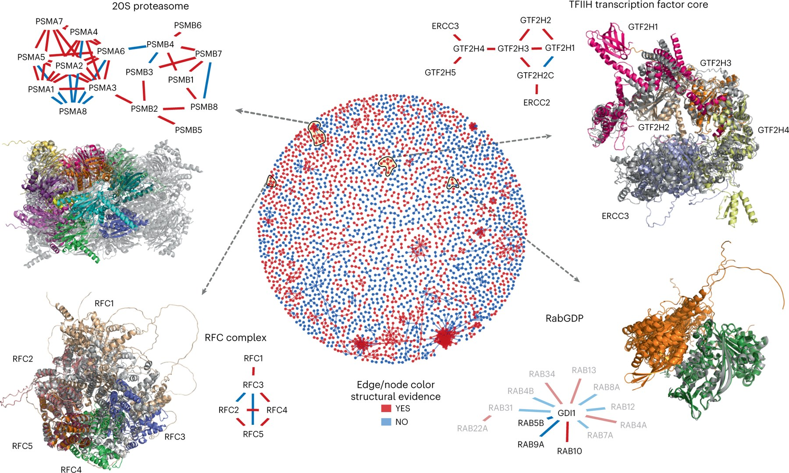
Stora komplex, bit för bit
Hela stora komplex var för stora för att köras i AlphaFold på en gång. Men man kan bygga dem bit för bit. Man förutsäger först hur kedjorna sitter ihop två eller tre i taget. Sedan lägger man ihop delarna, så att de bitar som är gemensamma för två förutsägelser läggs ovanpå varandra, ungefär som när man lägger ett pussel (Figur 16.19).
Ett exempel är proteasomens kärna, 20S-proteasomen (Figur 16.18). Hos människan består den av 28 kedjor: 14 olika proteiner, med två exemplar av varje, ordnade i fyra ringar med sju kedjor i varje.
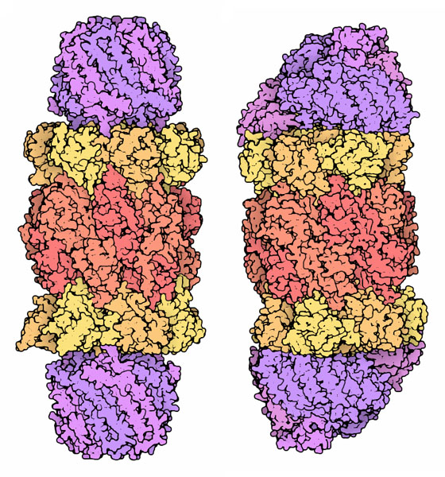
Problemet är att ordningen spelar roll: lägger man till bitarna i fel ordning blir det fel. Stockholmsgruppen löste det genom att låta datorn pröva många olika ordningar och systematiskt satsa mer på de vägar som såg lovande ut, en metod som kallas Monte Carlo-trädsökning och som är känd från datorprogram som spelar spel. Någon fysik ingår inte. Ändå kunde ungefär hälften av 175 testade komplex med mellan 10 och 30 kedjor byggas ihop helt, och omkring 30 av dem blev mycket noggranna, från ett program som aldrig tränats på mer än en kedja i taget.
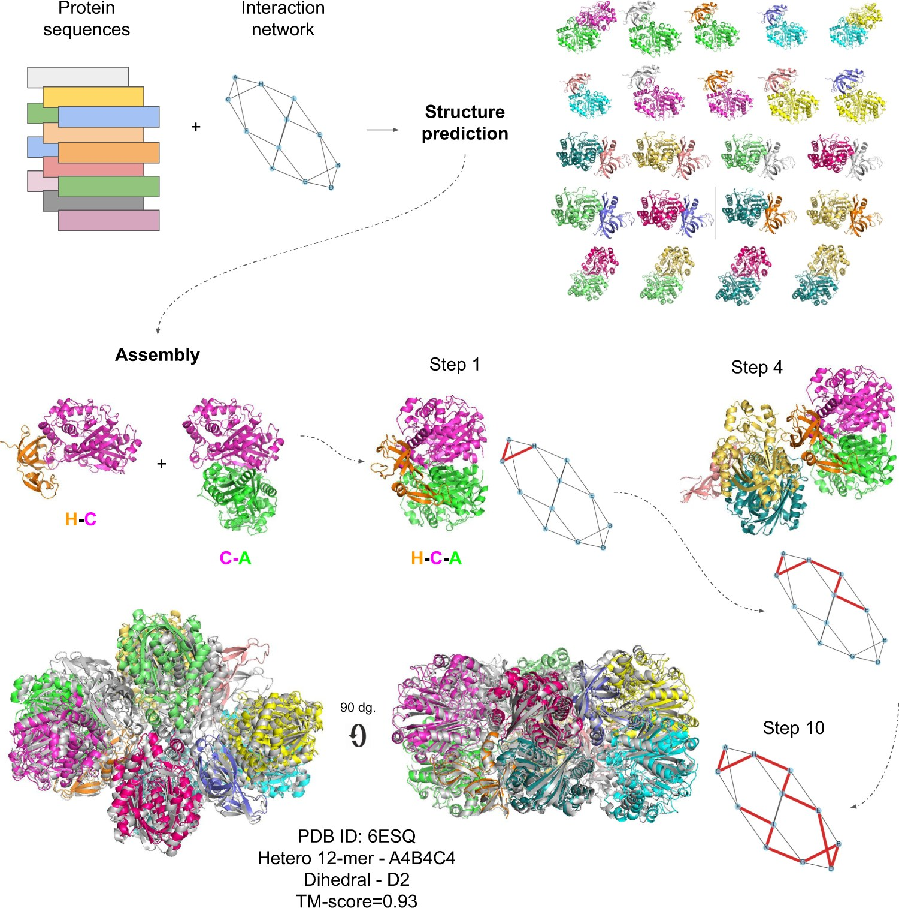
En säker modell är inget bevis
Komplex är fortfarande mycket svårare än enskilda proteiner, och svårigheten varierar. Stabila komplex, där två proteiner har arbetat tillsammans under lång tid i evolutionen och samevolverat, förutsägs ofta bra. Antikroppar och de virusproteiner de binder till har däremot inte utvecklats tillsammans, så där finns ingen samevolution att hämta. Sådana komplex förutsägs mycket sämre. Om man låter programmet göra hundratals modeller finns det ofta en bra bland dem, men det är svårt att veta vilken. Att ta fram en bra modell har blivit lättare än att veta vilken av modellerna som är bra.
Viktigast av allt: ett program som får två proteiner kan föreslå hur de skulle kunna binda till varandra, men det visar inte att de gör det i cellen. Två proteiner kan få en övertygande gemensam modell fast de finns i olika celltyper eller i olika delar av cellen och aldrig möts. Och i den trånga cellen (Avsnitt 14.4) möter varje protein tusentals andra, som ett program som bara får se två av dem inte vet något om. En säker modell av ett komplex är en hypotes som måste prövas på annat sätt.
16.12 AlphaFold 3: fler sorters molekyler
I maj 2024 presenterade DeepMind AlphaFold 3. Den stora nyheten är att programmet inte bara hanterar proteiner, utan också DNA, RNA, små molekyler som läkemedel, metalljoner och kemiska förändringar av proteinerna.
Grundidéerna är desamma som i AlphaFold 2, men programmet lägger mindre vikt vid släktboken och mer vid paren av aminosyror. Strukturmodulen har bytts mot en teknik som kallas diffusion, samma teknik som används i AI-program som skapar bilder. Under träningen får nätverket se kända strukturer som man har gjort suddiga genom att flytta atomerna slumpmässigt, och det lär sig att ta bort oskärpan. När det sedan ska förutsäga en struktur börjar det från ett slumpmässigt moln av atomer, som stegvis görs allt skarpare.
Att kunna förutsäga hur små molekyler binder har ett stort kommersiellt värde. De flesta läkemedel är små molekyler som binder till ett protein och hindrar det från att göra något. Den som kan förutsäga hur en molekyl binder kan snabbare välja ut lovande kandidater. Men att hitta själva molekylen står bara för en mindre del, kanske en tiondel, av kostnaden för ett nytt läkemedel. En molekyl som binder perfekt kan ändå vara giftig, och de dyraste stegen, de kliniska prövningarna på människor, återstår.
Den här gången var DeepMind inte lika generöst. Koden släpptes i november 2024, strax före Nobelprisutdelningen, men får bara användas för forskning som inte är kommersiell. Metoden var dock så noggrant beskriven att andra grupper inom några månader hade byggt egna versioner, som Boltz-1 och Chai-1, som är nästan lika bra och har friare villkor. Bakers grupp gjorde samtidigt ett eget program med liknande förmåga.
Hur mycket bättre är då AlphaFold 3? I CASP 2024 var AlphaFold 3 något bättre än AlphaFold 2 för komplex, men om man lät AlphaFold 2 göra väldigt många modeller försvann skillnaden. Diffusion har också en baksida: programmet kan hitta på en övertygande form för delar som i verkligheten saknar fast struktur.
16.13 Vad AlphaFold inte kan
Trots framgångarna finns det mycket som AlphaFold inte klarar. Några av de viktigaste begränsningarna:
- Rörelser. AlphaFold ger en stillbild. Men många proteiner växlar mellan olika former när de arbetar, som pumpar och transportörer (Kapitel 8, Kapitel 9). Ibland får man fram två olika former, ibland inte.
- Hur veckningen går till. Programmet säger ingenting om veckningsvägen, eller om en viss kedja alls veckar sig. Att proteiner ibland veckar sig fel och klumpar ihop sig, som vid Alzheimers sjukdom, kan det inte förutsäga. Inte heller de amyloida fibrernas form, som skiljer sig helt från det veckade proteinets (Avsnitt 15.2.1).
- Effekten av en enstaka mutation. Modellen visar var en mutation sitter, till exempel i proteinets inre eller i ytan mot ett annat protein, och det hjälper till att tolka sjukdomsmutationer. Men själva förändringen syns oftast inte: en mutation som gör proteinet instabilt ger i regel samma modell som det friska proteinet, eftersom släktboken är densamma. Ett exempel är ALS-mutationerna i SOD1, som gör proteinet mindre stabilt så att fler molekyler är oveckade (Avsnitt 15.8.1). Den skillnaden syns inte i en modell från AlphaFold.
- Proteiner med få släktingar. Utan en rik släktbok blir förutsägelserna sämre. Det gäller proteiner som är unika för en enda organism, proteiner som förändras snabbt och antikroppar.
- Stora, rörliga proteiner. De enskilda delarna, domänerna, blir ofta bra, men hur de ligger i förhållande till varandra kan bli godtyckligt.
- Membranet. AlphaFold 2 vet inte vad ett cellmembran är. Proteiner som går en enda gång genom membranet (Kapitel 8) kan därför bli fel.
- Det som inte finns med i beräkningen. Modellen gäller den kedja man matat in. Metalljoner, andra hjälpmolekyler och kemiska förändringar som proteinet behöver i cellen saknas, om man inte uttryckligen lägger till dem i AlphaFold 3. Om ett protein egentligen binder till DNA eller till någon annan stor molekyl som inte är med, kan AlphaFold 2 ibland lägga ett annat protein på den platsen.
Den gemensamma nämnaren är att AlphaFold har lärt sig av de strukturer som finns i databaserna, och de är nästan alla frysta ögonblicksbilder av välveckade proteiner. Det programmet aldrig har sett exempel på kan det inte heller lära sig.
Kort sagt: maskininlärning har i stort sett löst förutsägelsen av proteiners struktur, gjort stora framsteg för hur proteiner binder till varandra och förändrat proteindesignen. Men hur proteiner veckar sig, hur de rör sig när de arbetar och hur de påverkas av små förändringar är fortfarande öppna frågor. Där behövs både experimenten och fysiken.
16.14 Sammanfattning
- Ett proteins struktur beskrivs på fyra nivåer: sekvens, lokala helixar och flak, hela kedjans form och hur flera kedjor fogas ihop. Strukturen bestäms av sekvensen, men att räkna fram den med fysik tar alldeles för lång tid, och små fel i beräkningen kan få fel form att se rätt ut.
- Sedan 1994 testas metoder för att förutsäga strukturer i den dubbelblinda tävlingen CASP.
- Släktingar till ett protein har nästan samma form. De klassiska genvägarna utnyttjade det: profiler från hela familjen för att förutsäga helixar och flak, homologimodellering efter en släkting med känd struktur, trådning mot kända grundformer, och fragmentpussel för små proteiner utan mall.
- Maskininlärning betyder att en dator lär sig av exempel. Ett neuralt nätverk justerar miljontals inre inställningar tills det ger rätt svar, och testas sedan på exempel det inte har sett.
- Positioner som ändras i par i en proteinfamilj (samevolution) avslöjar vilka aminosyror som ligger nära varandra. Det började fungera kring 2009–2012, när man lärde sig skilja direkta från indirekta samband och databaserna hade blivit stora. Djupinlärning, lånad från bildigenkänning, gjorde förutsägelserna ännu bättre.
- AlphaFold 2 nådde 2020 nästan experimentell noggrannhet, även för proteiner utan kända släktingar. Det är ett enda neuralt nätverk som lärt sig mönster ur evolutionen, utan någon fysik. Det anger själv hur säker varje del av modellen är (pLDDT och PAE), men säkerhet är inte detsamma som riktighet.
- Koden släpptes fritt, och strukturer för omkring 200 miljoner proteiner finns i en öppen databas. Nobelpriset i kemi 2024 gick till Demis Hassabis och John Jumper för AlphaFold och till David Baker för datorbaserad proteindesign.
- Metoderna förutsäger nu också hur proteiner sitter ihop, i par och i stora komplex. Det fungerar bäst när proteinerna har samevolverat, och en säker modell visar inte att proteinerna verkligen binder i cellen. AlphaFold säger inget om hur proteiner veckar sig eller rör sig, och klarar dåligt effekten av enstaka mutationer.
16.15 Nyckelbegrepp
- strukturförutsägelse – Att med datorns hjälp beräkna ett proteins tredimensionella form utifrån dess aminosyrasekvens.
- primärstruktur – Ett proteins sekvens, ordningen mellan aminosyrorna i kedjan.
- sekundärstruktur – De regelbundna mönster, alfahelixar och betaflak, som kedjans ryggrad bildar på korta sträckor och som hålls ihop av vätebindningar.
- tertiärstruktur – Hela proteinkedjans tredimensionella form, hur helixar och flak packas mot varandra.
- kvartärstruktur – Hur flera proteinkedjor fogas ihop till ett komplex, som de fyra kedjorna i hemoglobin.
- domän – En kompakt del av ett protein, oftast 50–250 aminosyror, som kan vecka sig för sig själv. Domäner kombineras på nya sätt under evolutionen.
- energilandskap – En bild av hur ett proteins energi beror på dess form. För proteiner liknar landskapet en tratt med den veckade formen längst ned.
- CASP – Critical Assessment of Protein Structure Prediction, en dubbelblind tävling vartannat år sedan 1994 där forskare förutsäger strukturer som ännu inte publicerats.
- artificiell intelligens – AI, datorprogram som utför uppgifter som tidigare krävde mänskligt omdöme, till exempel att känna igen bilder eller förstå språk.
- maskininlärning – Den del av AI där en dator lär sig av exempel med kända svar i stället för att följa regler som en människa skrivit.
- neuralt nätverk – Ett program för maskininlärning byggt av många lager av enkla räknesteg, vars inre inställningar justeras under träningen.
- djupinlärning – Maskininlärning med neurala nätverk som har många lager (eng. deep learning).
- träningsdata – De exempel med kända svar som ett maskininlärningsprogram lär sig av. För AlphaFold var det de experimentellt bestämda strukturerna i PDB.
- homologa proteiner – Proteiner med gemensamt evolutionärt ursprung. De har oftast liknande form även om sekvenserna skiljer sig.
- multipel sekvensuppställning – En uppställning av många besläktade sekvenser under varandra, så att aminosyror som motsvarar varandra hamnar i samma kolumn (eng. multiple sequence alignment, MSA).
- konserverad aminosyra – En aminosyra som är densamma i alla släktingar till ett protein, kallas också bevarad. Tyder på att aminosyran är viktig för proteinets form eller funktion.
- profil – En sammanfattning av vilka aminosyror som förekommer i varje position i en proteinfamilj.
- homologimodellering – Att bygga en modell av ett protein med strukturen hos en släkting som mall. Fungerar bra när sekvenserna är tillräckligt lika.
- trådning – Att pröva en sekvens mot kända grundformer för att se vilken den passar bäst, även när ingen släktskap syns i sekvensen (eng. threading).
- fragmentpussel – Att bygga en modell från grunden genom att pussla ihop korta bitar av kända strukturer, som i programmet Rosetta.
- samevolution – Att två positioner i en proteinfamilj ändras tillsammans under evolutionen, oftast för att aminosyrorna ligger mot varandra (även koevolution).
- kompenserande mutation – En mutation som återställer en funktion eller stabilitet som en tidigare mutation försämrat, till exempel genom att en granne byter laddning.
- kontaktkarta – En kvadratisk tabell över alla par av aminosyror i ett protein, där en markering visar att två aminosyror ligger nära varandra.
- AlphaFold – Program från företaget DeepMind som förutsäger proteiners struktur med djupinlärning. Version 2 nådde 2020 nästan experimentell noggrannhet, och version 3 (2024) hanterar också DNA, RNA och små molekyler.
- uppmärksamhet – En teknik i neurala nätverk, från språkmodellerna, där nätverket själv lär sig vilka delar av indata som hänger ihop (eng. attention).
- pLDDT – AlphaFolds mått, från 0 till 100, på hur säker förutsägelsen är för varje aminosyra.
- PAE – AlphaFolds mått på hur säkert det inbördes läget är mellan två delar av en modell, till exempel två domäner eller två proteiner (eng. predicted aligned error).
- dockning – Att förutsäga hur två molekyler, till exempel två proteiner, sitter ihop.
- proteindesign – Att konstruera nya proteinsekvenser som veckar sig till en önskad form eller utför en önskad uppgift.
16.16 Testa dig själv
Flervalsfrågor
Välj ett svar och tryck på Rätta. Svarsalternativen visas i ny ordning varje gång.
Fundera vidare
16.1 Förklara med egna ord varför en samling släktingar till ett protein innehåller information om proteinets tredimensionella form.
16.2 Hur mycket tror du att databasernas tillväxt bidrog till genombrottet för strukturförutsägelse, jämfört med nya idéer inom maskininlärning?
16.3 AlphaFold 2 hade bara tränats på enskilda proteinkedjor, men kunde ändå förutsäga hur två proteiner sitter ihop. Vad säger det om vad programmet har lärt sig?
16.4 Ge några exempel på vad AlphaFold inte kan, och förklara varför det är så.
16.5 Jämför de tre klassiska vägarna till en proteinstruktur: homologimodellering, trådning och fragmentpussel. När fungerar var och en?
Hjälp oss att förbättra kapitlet
Hittade du ett fel, eller något som var svårt att förstå? Skicka ett förslag i förslagsformuläret (kräver inloggning med SU-konto). Lärarna läser alla förslag inför nästa version av boken.
16.17 Läs mer
- Nobelpriset i kemi 2024, populärvetenskaplig information på nobelprize.org (på engelska): en lättläst genomgång av både AlphaFold och Bakers proteindesign, med bra bilder.
- Proteinstruktur på svenska Wikipedia, om strukturens fyra nivåer.
- AlphaFold på svenska Wikipedia och den utförligare artikeln på engelska Wikipedia.
- Protein structure prediction på engelska Wikipedia, en översikt av de klassiska metoderna: homologimodellering, trådning och modellbygge från grunden.
- AlphaFold Protein Structure Database, där man kan söka på ett proteins namn och se den förutsagda modellen, färgad efter säkerhet (på engelska).
- CASP, tävlingens egen webbplats, med resultat från alla omgångar sedan 1994 (på engelska).
- Proteasome, Molecule of the Month på PDB-101 (på engelska), med bilder av David S. Goodsell.